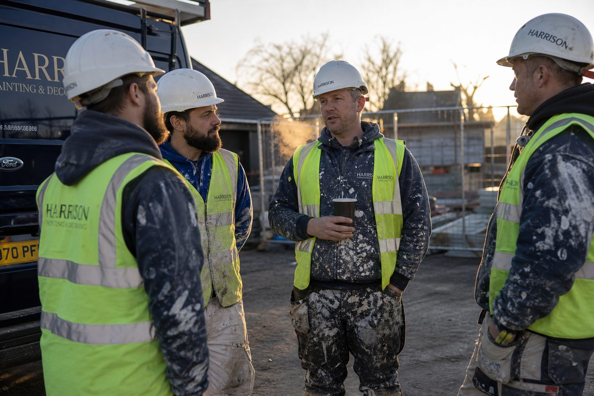

Compliance evidence
Right to Work, CSCS, trade cards and training certificates, with the evidence of each check recorded and expiry dates tracked.
For contractors · Hampshire · Surrey · South East
We help you request, check and manage skilled operatives and work-ready crews. Right to Work, CSCS, training, experience and work history, brought together so you can see who is suitable and available before they reach your site.
Worker Passport · illustrative, not a real worker
Two ways in
Contractors tell us what the job needs. Workers build a record that shows what they can do. We match one to the other.
Tell us the trade, how many people you need, where, when and for how long, plus any cards or training the site requires. We check the evidence, match against your actual requirements and keep a record after deployment.
There is no fee for workers to register. Matching is based on the job requirements, recorded evidence and worker availability. Register once and your cards, training, experience and work history sit in one place. Every job you finish adds to your reliability record.
What contractors tell us
These are the complaints we hear most from contractors, and what we do about each one.
Attendance goes on every worker's record. If a confirmed worker doesn't show, we aim to begin the replacement search within 60 minutes.
We check availability against your dates before anyone is put forward.
Experience is shown through work history, references and supervisor feedback, not a job title.
Cards and training are checked, expiry dates are tracked, and anything out of date is flagged.
Checks are made and the verification evidence is recorded, so you can see what was checked.
You see the names before anyone travels, and any change is agreed with you first.
We start from a pool of workers already on file by trade and area, so the search doesn't begin from nothing.
A Worker Passport carries a reliability record: attendance, performance evidence and whether contractors would use the worker again.
We only call a group a crew when its members have genuinely worked together.
What you get
Each is useful on its own. Together they give you a clearer picture of who is coming to site.
Right to Work, CSCS, trade cards and training certificates, with the evidence of each check recorded and expiry dates tracked.
Experience shown through work history, references and supervisor feedback on the specific work, such as cutting in on satinwood or spray finishing.
Attendance, performance evidence and whether contractors would use the worker again, built from real jobs and added to after every one.
We match against your actual job and site requirements, confirm the names with you, and keep a record after deployment.
Where people have genuinely worked together before, we can put them forward as a crew, with the cards and training you asked for checked.
What we check
Where an official verification service or recognised database is available, card and qualification details are checked against the relevant source and the verification evidence is recorded.
Right to Work evidence is checked and recorded before a worker is put forward.
Card type, status and expiry are checked against the CSCS source where available, and the evidence is recorded.
NVQ, City & Guilds, IPAF, PASMA and similar, checked with the awarding body where a service exists.
Asbestos awareness, working at height, manual handling and anything your site adds. Out-of-date training is flagged.
Previous work, references and supervisor feedback, so "experienced" is something you can see.
Every card and certificate is tracked, with reminders at 60 and 30 days. Where current evidence is mandatory for the job or site, expired evidence means the worker is not put forward until it has been renewed.
A Worker Passport is a PRJGENUI workforce profile. It is not an official government passport or identity document.
How it works
Tell us the trade, how many people, the site location, the start date, how long you need them and any cards or training that are essential.
It takes a couple of minutes. We aim to respond within one business day.
Mark the request as urgent and it is picked up first. A phone and WhatsApp line for urgent requests is being set up.
A Worker Passport is a PRJGENUI workforce profile. It is not an official government passport or identity document.
Each worker has a Worker Passport. We match it against what your job and site actually require.
Anyone with an expired card or lapsed training isn't put forward for work that needs it.
Work history, supervisor feedback, attendance, and whether the people have worked together before.
Names, rates and start time are agreed with you before anyone travels.
After deployment, attendance and feedback go on each worker's record. That record is what you see next time.
You tell us through the dashboard or by phone. It goes on the worker's record.
Same trade and area, cards in date, within reach of the site.
Workers who have worked with the rest of the crew before come first.
If a confirmed worker reports a no-show or late cancellation, we aim to begin the replacement search within 60 minutes during our operating hours. That's a commitment to start the search, not a guarantee that a replacement will be found.
Why we exist
PRJGENUI Workforce grew out of Marizilena Silva Fortes's experience managing construction workers and subcontractors, and dealing with the compliance checks and last-minute problems that come with them.
On real projects the same things kept happening. Someone didn't turn up, a card had expired, or a worker described as experienced couldn't do the job. Most of it could have been avoided if the right evidence had been in one place before the worker arrived.
That is what we do. We bring the evidence together, match it to the job, and keep a record afterwards.
Before you book anyone
These questions are worth asking whoever you use. Here is how we answer them.
Where an official verification service or recognised database is available, card and qualification details are checked against the relevant source and the verification evidence is recorded.
Yes. Each Worker Passport carries a reliability record built from real jobs.
We only call a group a crew when its members genuinely have. Otherwise we say they are individuals.
Yes. Names, rates and start time are agreed with you first.
If a confirmed worker reports a no-show or late cancellation, we aim to begin the replacement search within 60 minutes during our operating hours.
Coverage
The pilot is local on purpose. A small number of contractors, a tight area, and records that get richer with every job.
Not in one of these areas yet? Tell us where you are on the request form and we'll let you know when we get there.

Pilot
We're beginning with a small number of contractors across Hampshire, Surrey and the South East. If that's you, we'd rather have a conversation than send you a brochure.
FAQ
Straight answers for contractors and for workers. Where something depends on the job, we say so.
Can't find what you're looking for? Send us a message.
We help contractors request, check and manage skilled operatives and work-ready crews. We bring Right to Work, CSCS, training, experience and work history together in one record, so you can see who is suitable and available before they reach site.
We're based on the realities of construction sites, so we do more than send people. We match against the actual job and site requirements, and keep a record after deployment.
A Worker Passport holds a worker's Right to Work evidence, CSCS and trade cards, qualifications, training, experience, work history and reliability record in one place. It takes the place of a CV that nobody can check.
A Worker Passport is a PRJGENUI workforce profile. It is not an official government passport or identity document.
Where an official verification service or recognised database is available, card and qualification details are checked against the relevant source and the verification evidence is recorded.
Expiry dates are tracked, and anything that has expired is flagged so the worker isn't put forward for jobs that need it.
If a confirmed worker reports a no-show or late cancellation, we aim to begin the replacement search within 60 minutes during our operating hours.
That's a commitment to start the search quickly, not a promise that a replacement will be found. The no-show stays on the worker's record, so the next contractor sees an honest history.
We only call a group a crew when its members have genuinely worked together before. If we put forward individuals who haven't, we say so.
A work-ready crew also means the cards and training you asked for have been checked before they arrive.
Use the request form. Tell us the trade, how many people, the site location, start date, how long you need them and any cards or training the site requires. We aim to respond within one business day.
If it's urgent, tick the urgent box on the form. A phone and WhatsApp line for urgent requests is being set up.
Agency supply rates for painters and decorators usually sit between £15 and £24 an hour, with experienced decorators in the South East towards the top of that range.
Day rates for agency labour tend to fall between £120 and £190, and specialist trades cost more. We confirm the exact rate in writing before every assignment.
For almost all site work, yes. Most principal contractors won't let you through the gate without a valid CSCS card.
We check cards against the relevant source where a verification service is available, and we track expiry dates so nobody gets caught out by a lapsed card.
Hampshire, Surrey and the wider South East, including Guildford, Woking, Farnborough, Basingstoke, Winchester, Reading and the towns around them. See the full list above.
We're running a pilot with a small number of contractors, so we're growing the area steadily rather than spreading ourselves thin.
Use Register as a Worker. There is no fee. You'll need Right to Work in the UK and, for most site work, a valid CSCS card. We then set up your Worker Passport and match you to work by trade, area and record.
It's a short form and a person reads every one. We aim to respond within one business day.